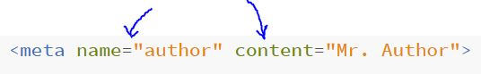
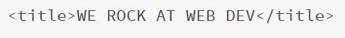
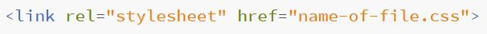
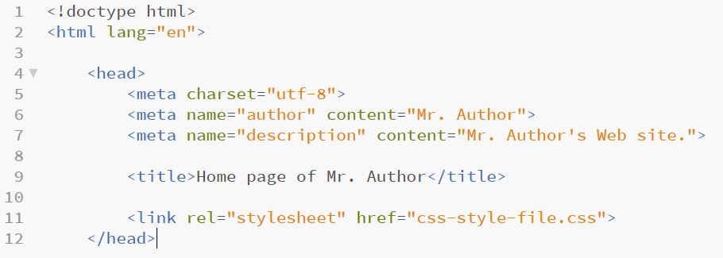

What is the head??
- HTML has two parts: the head, and the body.
- The head is the first part of the HTML document where we can put the metadata. No page content is placed here, it is just for technical things.
What is metadata?
- Metadata is "data about data." It is a part of the HTML document that is not displayed, but read by machines.
- The three important metadata tags that we will cover are:
- meta
- title
- link
The Meta Tag
- Used to give information about the website that is not displayed but is readable by machines (search engines, etc.)
- Can give several different types of data, in other words, there are different ways you can use the tag by using different attributes.
- Usage:

Other attributes for the meta tag
- “author” - contains the name of the author of the page.
- “keywords” - gives keywords that can make the page show up in search.
- “description” - gives some description of the site.
- “charset” - something we always include to state what set of characters the site will use.
The title Tag
- Gives the page a title. This title shows up on the window bar of the browser, when the person bookmarks a page, and when the page turns up in search results.
How it's used:

The link Tag
- Used to link external files to the HTML document (for example, CSS. The style sheets we make are linked by using this link tag).
- How is it used?:

- "href" gives the path to the stylesheet file to be used in styling the HTML.
Altogether, a basic head should look something like this:

With the three different tags in use, the rest of your webpage is ready to be written!